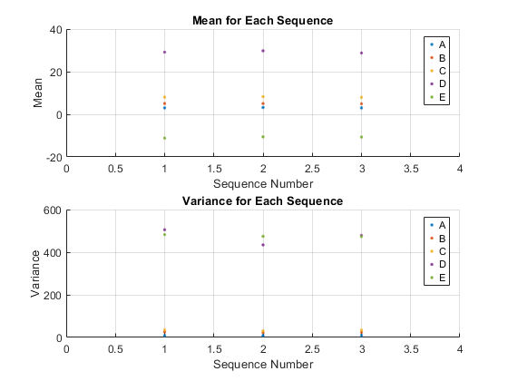

Problem 3
for i = 1 : 3
A = 3 + 3*randn(1000,1);
B = 5 + 5*randn(1000,1);
C = A + B;
D = 3*A + 4*B;
E = 3*A - 4*B;
DATA = [A B C D E];
meanA(i) = mean(A);
meanB(i) = mean(B);
meanC(i) = mean(C);
meanD(i) = mean(D);
meanE(i) = mean(E);
varA(i) = var(A);
varB(i) = var(B);
varC(i) = var(C);
varD(i) = var(D);
varE(i) = var(E);
meanDATA(i,:) = mean(DATA);
covDATA(:,:,i) = cov(DATA);
fprintf("\nSequence %g\n",i)
fprintf("--------------------------\n")
fprintf("Mean A = %.4f\n",meanA(i))
fprintf("Mean B = %.4f\n",meanB(i))
fprintf("Mean C = %.4f\n",meanC(i))
fprintf("Mean D = %.4f\n",meanD(i))
fprintf("Mean E = %.4f\n\n",meanE(i))
fprintf("Var A = %.4f\n",varA(i))
fprintf("Var B = %.4f\n",varB(i))
fprintf("Var C = %.4f\n",varC(i))
fprintf("Var D = %.4f\n",varD(i))
fprintf("Var E = %.4f\n\n",varE(i))
fprintf("Mean DATA = \n")
fprintf("%.4f %.4f %.4f %.4f %.4f\n\n",meanDATA(i,:))
fprintf("Cov DATA = \n")
fprintf("%10.4f %10.4f %10.4f %10.4f %10.4f\n",covDATA(:,:,i))
end
subplot(2,1,1)
hold on
grid on
plot(meanA,'.')
plot(meanB,'.')
plot(meanC,'.')
plot(meanD,'.')
plot(meanE,'.')
title("Mean for Each Sequence")
xlabel("Sequence Number")
xlim([0,4])
ylabel("Mean")
legend('A','B','C','D','E')
subplot(2,1,2)
hold on
grid on
plot(varA,'.')
plot(varB,'.')
plot(varC,'.')
plot(varD,'.')
plot(varE,'.')
title("Variance for Each Sequence")
xlabel("Sequence Number")
xlim([0,4])
ylabel("Variance")
legend('A','B','C','D','E')
Sequence 1
--------------------------
Mean A = 2.9952
Mean B = 5.0392
Mean C = 8.0344
Mean D = 29.1423
Mean E = -11.1712
Var A = 9.0474
Var B = 25.7764
Var C = 35.7774
Var D = 505.2920
Var E = 482.4056
Mean DATA =
2.9952 5.0392 8.0344 29.1423 -11.1712
Cov DATA =
9.0474 0.4768 9.5242 29.0494 25.2350
0.4768 25.7764 26.2532 104.5359 -101.6751
9.5242 26.2532 35.7774 133.5854 -76.4401
29.0494 104.5359 133.5854 505.2920 -330.9953
25.2350 -101.6751 -76.4401 -330.9953 482.4056
Sequence 2
--------------------------
Mean A = 3.2018
Mean B = 5.0430
Mean C = 8.2448
Mean D = 29.7773
Mean E = -10.5665
Var A = 9.1237
Var B = 23.2517
Var C = 30.7014
Var D = 434.0526
Var E = 474.2290
Mean DATA =
3.2018 5.0430 8.2448 29.7773 -10.5665
Cov DATA =
9.1237 -0.8370 8.2867 24.0229 30.7190
-0.8370 23.2517 22.4147 90.4959 -95.5180
8.2867 22.4147 30.7014 114.5189 -64.7990
24.0229 90.4959 114.5189 434.0526 -289.9149
30.7190 -95.5180 -64.7990 -289.9149 474.2290
Sequence 3
--------------------------
Mean A = 3.0131
Mean B = 4.9301
Mean C = 7.9432
Mean D = 28.7597
Mean E = -10.6813
Var A = 9.7196
Var B = 24.2752
Var C = 34.2136
Var D = 478.5049
Var E = 473.2524
Mean DATA =
3.0131 4.9301 7.9432 28.7597 -10.6813
Cov DATA =
9.7196 0.1094 9.8290 29.5964 28.7210
0.1094 24.2752 24.3846 97.4289 -96.7723
9.8290 24.3846 34.2136 127.0253 -68.0513
29.5964 97.4289 127.0253 478.5049 -300.9263
28.7210 -96.7723 -68.0513 -300.9263 473.2524
